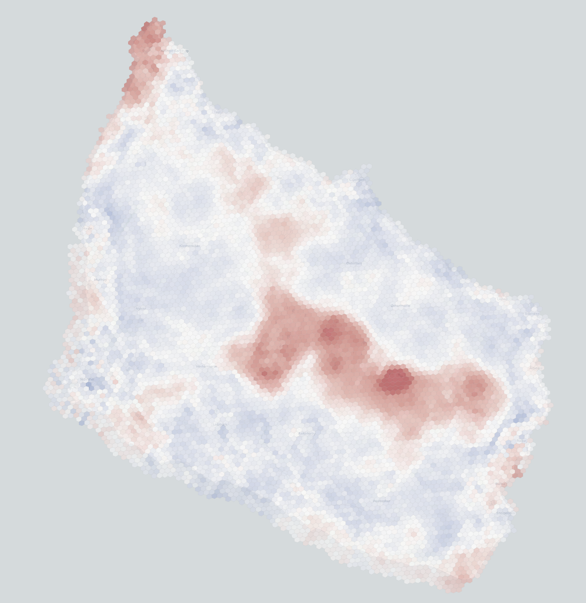

Först
Kortfattad rapport
Den korta, handledarinriktade läsningen. Här finns översikten, huvudfrågorna och den snabbaste vägen in i arbetet.
Landskapsanalysen beskriver Bornholms rumsliga landskapskaraktär i ett hexbaserat ramverk. Ovanpå den modellen ska ett separat acceptanslager byggas för scenarioarbete kring vindkraft.
Rapportdelen beskriver modellen. Acceptansdelen använder modellen som underlag för nästa lager.

Den korta, handledarinriktade läsningen. Här finns översikten, huvudfrågorna och den snabbaste vägen in i arbetet.
Den längre metod- och resultatrapporten. Här ligger nu v3.2-spåret med metodik, jämförelser, tolkning och den samlade analysberättelsen.
Den separata rapporten för acceptansramverket. Den följer efter landskapsdelen och kan läsas när ni vill gå vidare från modell till acceptansscenarier.
Den interaktiva versionen av acceptansarbetet. Appen kan publiceras separat på Streamlit och öppnas direkt härifrån när ni vill testa scenarier efter rapportgenomgången.